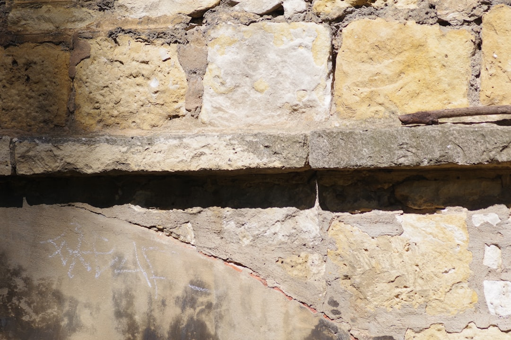

Adelaide waterproofing decisions usually turn on the area affected, the likely water path, the surface finish, and the written scope. The source page identifies AS 3740 wet area compliance, South Australian licensed contractors, site inspection, written quote, itemised scope, warranty terms, and a 4 step enquiry process. Use those points to compare a shower, bathroom, balcony, basement, retaining wall or roof deck job before authorising membrane work.
For owners comparing waterproofing adelaide options, the practical starting point is not a product name but the affected area, the leak source, the standard required and the written quote.
Waterproofing Adelaide Explained
Pro Waterproofing Adelaide describes work that starts with project details, then moves to site inspection, leak source assessment, written quote and work completed to Australian Standards. That order matters because a stain, cracked grout line or damp wall is only a symptom. The quote should identify where water is entering, where it is travelling, and which surface or membrane system is being addressed.
For wet areas, the source page names bathrooms, laundries, WC areas and showers, with AS 3740 compliance as the relevant domestic wet area standard. For outdoor or below ground areas, the decision changes. Balconies, roof decks, basements, retaining walls and exposed joints need a scope that explains whether the work is repair, replacement, reinstatement, tanking or moisture tracing.
- Ask which area is being waterproofed and which adjacent finishes may be affected.
- Ask whether the quote is for diagnosis, membrane installation, membrane repair or resealing.
- Ask how warranty terms are recorded, especially for full membrane installations.
Who This Applies To
This guide applies to homeowners, renovators, strata contacts, commercial property managers and owners of managed properties who need an organised way to brief a contractor. The source page names residential waterproofing, commercial waterproofing, strata and managed property work, so the checklist should fit both a single bathroom renovation and a larger building maintenance issue.
For a homeowner, the priority is usually a clear wet area or balcony scope before tiles, fixtures or finishes are disturbed. For a property manager, the same quote may need enough detail to explain access, investigation, membrane choice and warranty terms to other decision makers. For a commercial or strata setting, separate the immediate leak diagnosis from the longer term membrane maintenance decision.
The related Adelaide waterproofing contractors guide is useful when the main question is contractor comparison rather than project scoping.
Adelaide Property Scenarios
The source page gives different local examples without turning locality into a suburb list. Inner areas such as Adelaide CBD and North Adelaide are described with heritage terraces, modern apartments, unit balconies, basement car parks and renovated wet areas. That points to a practical quote question: can the contractor explain how the work will fit the building type and existing finishes?
Coastal examples such as Glenelg and Henley Beach are tied to salt laden air, wind, UV exposure, balconies, terraces, roof decks and outdoor showers. Foothills and established areas such as Magill, Burnside and Campbelltown are linked to sloping sites, retaining walls, basements, seasonal runoff, clay soils and older wet areas. Those are not reasons to assume one product. They are reasons to ask for a scope that connects the building condition to the selected membrane or repair method.
- Older wet areas may need membrane reinstatement during renovation.
- Apartment balconies and terraces may need repair or replacement of tiled or concrete balcony membranes.
- Below ground areas may require tanking, sump systems or hydrostatic pressure control.
What A Written Quote Should Clarify
The source page says customers receive a clear, itemised quote and scope before work begins, with warranty terms in writing. A useful quote should therefore be specific enough to compare, not just a one line total. It should name the affected area, the inspection finding, the preparation work, the membrane or repair category, and any finish reinstatement assumptions.
For shower and bathroom work, ask whether the diagnosis found a leaking shower issue, a membrane reinstatement need, a resealing task or a broader wet area rebuild. For balcony or roof deck work, ask whether the surface is tiled, concrete, podium, rooftop terrace or flat roof membrane. For retaining wall or basement work, ask whether the scope refers to positive side work, negative side work, tanking, sump systems or pressure control, using the same language that appears in the published service descriptions.
Keep the acceptance decision tied to documents. A verbal explanation can help, but the scope, price and warranty terms need to be written before the job starts.
Choosing Between Repair And Replacement
The page lists leak detection and repair alongside membrane selection, installation, repair and replacement. That makes the main comparison straightforward: a targeted repair may suit a contained leak source, while a full membrane installation or replacement is a larger intervention that should carry clearer written warranty terms.
Do not decide from the visible mark alone. Moisture tracing and invasive investigation are listed service types, which means the source of water may need to be checked before the scope is finalised. A shower leak, balcony failure, roof deck issue and basement water path can look similar from inside the property, but each points to a different work area and quote structure.
For waterproofing adelaide projects, the stronger brief is factual: area affected, property type, visible symptom, previous repairs, access constraints and the result needed. That gives the contractor enough information to inspect the site and state whether the job is diagnosis, repair, reinstatement, tanking or full membrane replacement.
- Describe the area. State whether the issue is a shower, bathroom, balcony, basement, retaining wall, roof deck or another exposed surface.
- Record visible symptoms. Note stains, dampness, cracked finishes or recurring leaks without assuming the source.
- Ask for inspection findings. Have the contractor explain the likely water path before quoting the repair or membrane work.
- Compare written scope. Check that price, included work, exclusions and warranty terms are documented before approval.
| Decision point | Targeted repair | Full membrane work |
|---|---|---|
| Best fit | A defined leak source or localised failure | A broader failed wet area, balcony, roof deck or below ground system |
| Quote focus | Investigation, moisture tracing and repair method | Preparation, membrane system, installation area and warranty terms |
| Reader question | What evidence identifies the leak source? | What surfaces are included and what is excluded? |
Common questions
What should I ask before accepting an Adelaide waterproofing quote? Ask which area is being waterproofed, what inspection finding supports the scope, whether the job is repair or full membrane work, and how the warranty terms are written.
Does every shower leak mean a full bathroom rebuild? The source page separates leaking shower diagnosis, membrane reinstatement and resealing from complete bathroom waterproofing. The right question is what the inspection identifies, not what the surface symptom suggests.
When does AS 3740 matter? The source page cites AS 3740 for domestic wet area work, including bathrooms, laundries and WC areas. Ask the contractor to explain how the quoted wet area work is being completed to that standard.
How should balcony and roof deck work be compared? Compare the surface type, the investigation method, whether the membrane is being repaired or replaced, and whether the written scope covers finish reinstatement and warranty terms.
This guide covers practical scoping questions for Adelaide wet area, balcony, basement, retaining wall and roof deck waterproofing work.